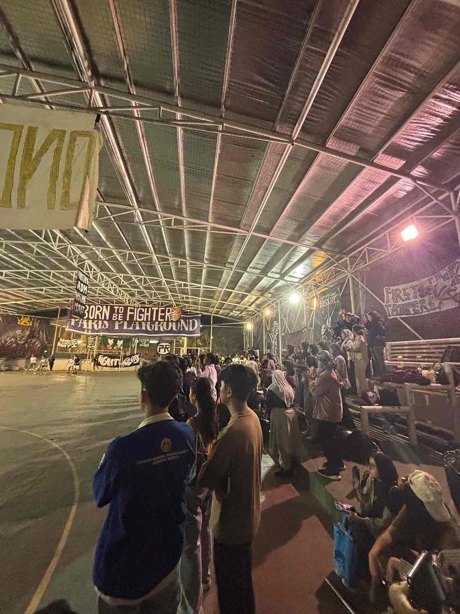
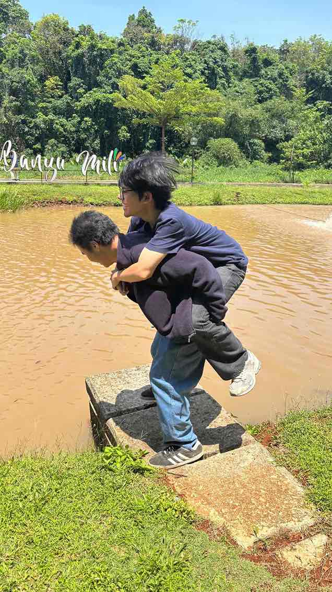
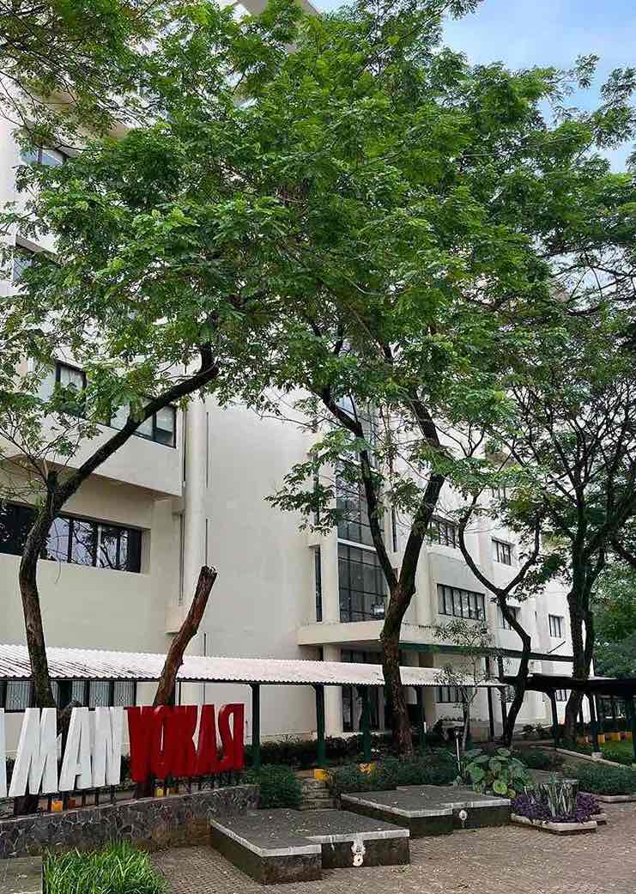
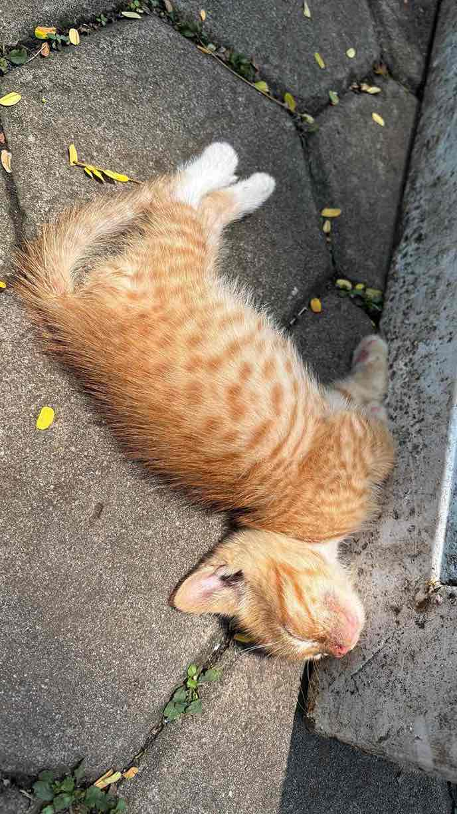
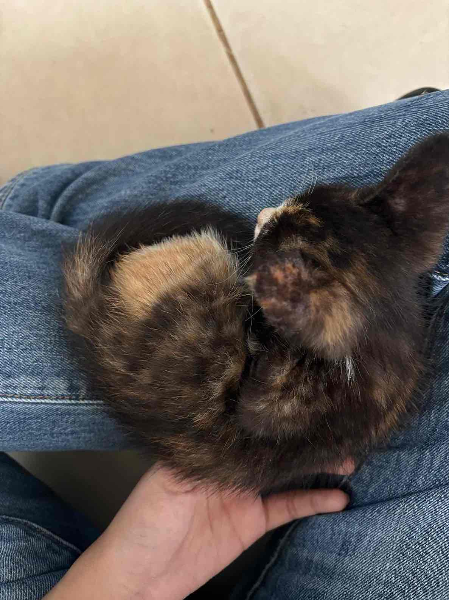
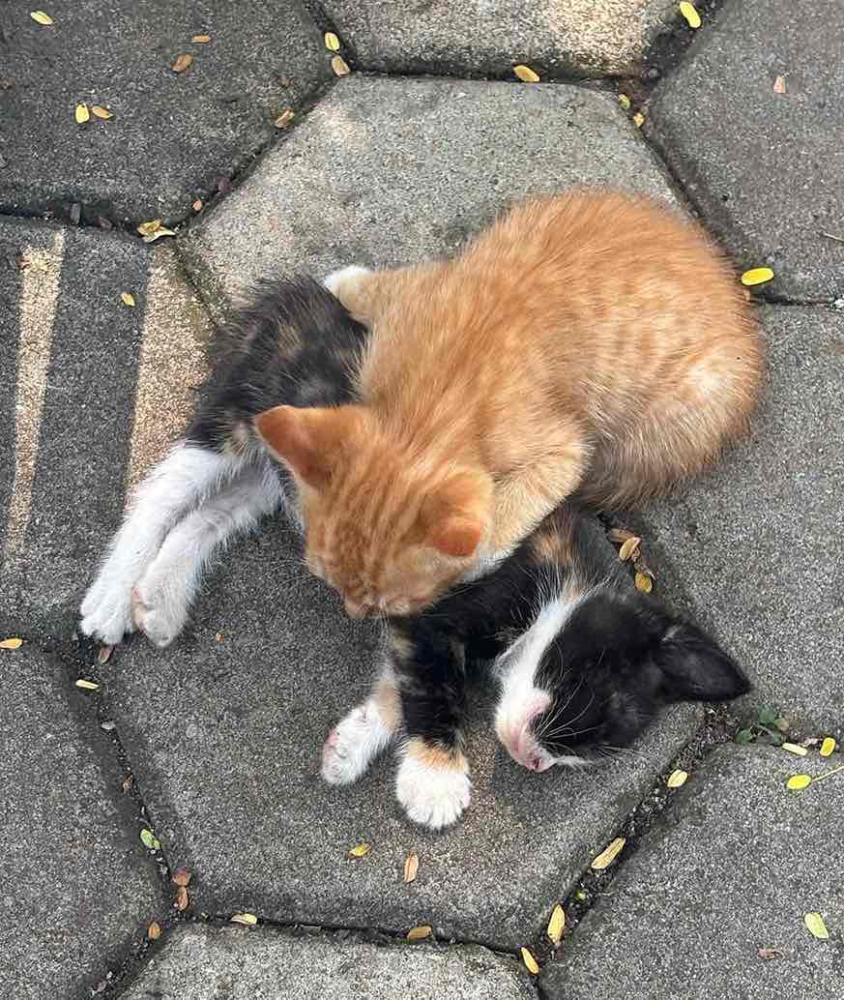
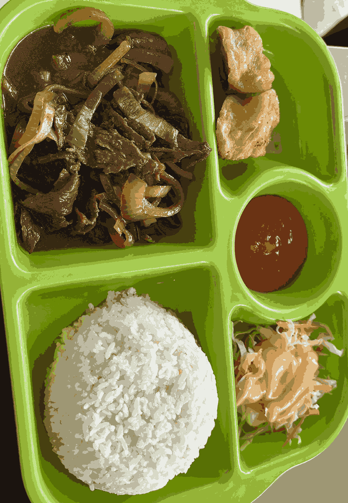
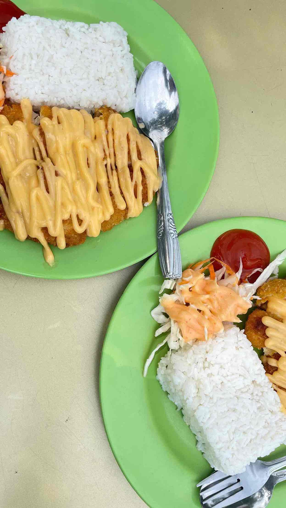

Lapangan Basket Vokasi

Banyu Mili

Taman Literasi











Lapangan Basket VOKASI merupakan tempat berkegiatan mahasiswa seperti Ombak, Olimvok, Mabimvok dan banyak lagi. Banyu Mili adalah kolam di dekat kantin yang bikin suasana makan jadi adem. Taman literasi jadi tempat favorit mahasiswa untuk duduk, diskusi, makan, dan istirahat. Selasar VB sering dipakai untuk event besar seperti offline activation Pokémon September 2025 lalu. Taman Vokasi luas dan cocok untuk kegiatan ramai. Kantin Vokasi (Kanvok) juga ramai pengunjung dari semua fakultas karena makanan variatif. Lingkungan yang nyaman membuat banyak kucing betah di sini. Karambol, bento, dan katsu adalah makanan wajib dicoba. Fun fact: di Kanvok bisa minta nasi banyak, asal piringnya dikembalikan lagi ya!